Personal Design System Demo
1 Source Portfolio
造物起异包装设计 (Zaowu Qiyi Packaging Design), a Guangzhou-based packaging/
brand studio — profile on ZCOOL (站酷),
zcool.com.cn/u/ZNTI2Mjc5ODA=.
10 of the studio's works were sampled as this system's entire evidential base — one cover image
per work, screenshot-resolution, anonymous session (no login). Full sourcing detail:
PORTFOLIO_SOURCE.md, PORTFOLIO_SAMPLE_SELECTION.md.
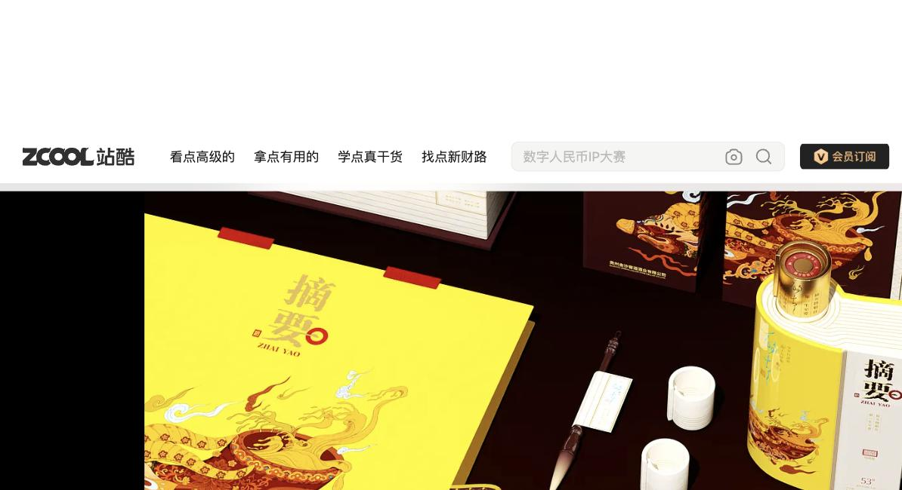
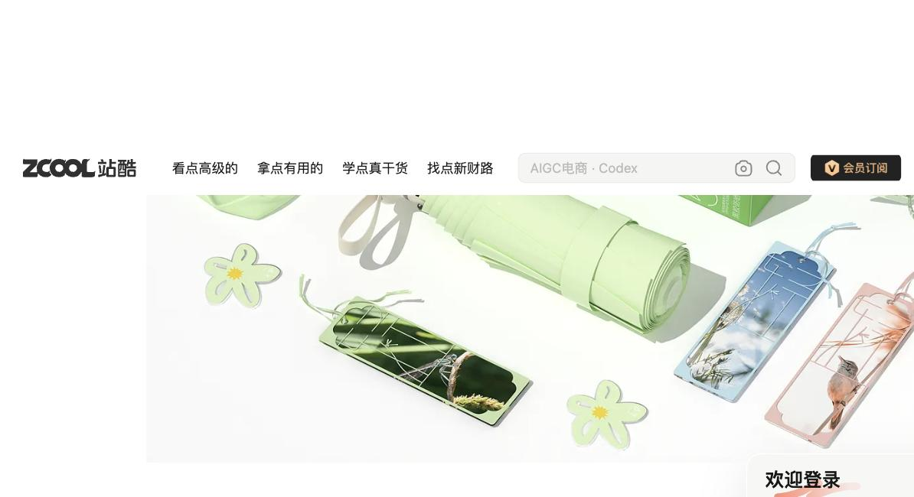

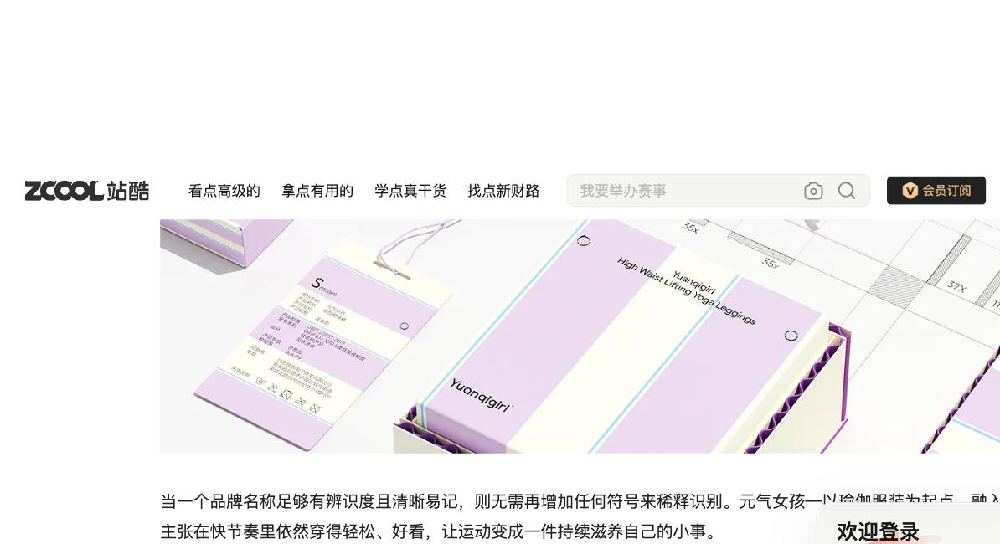
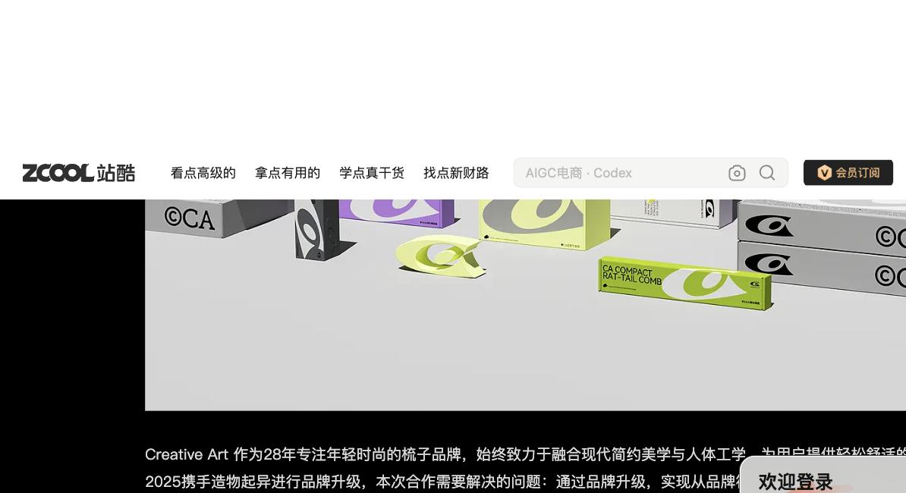
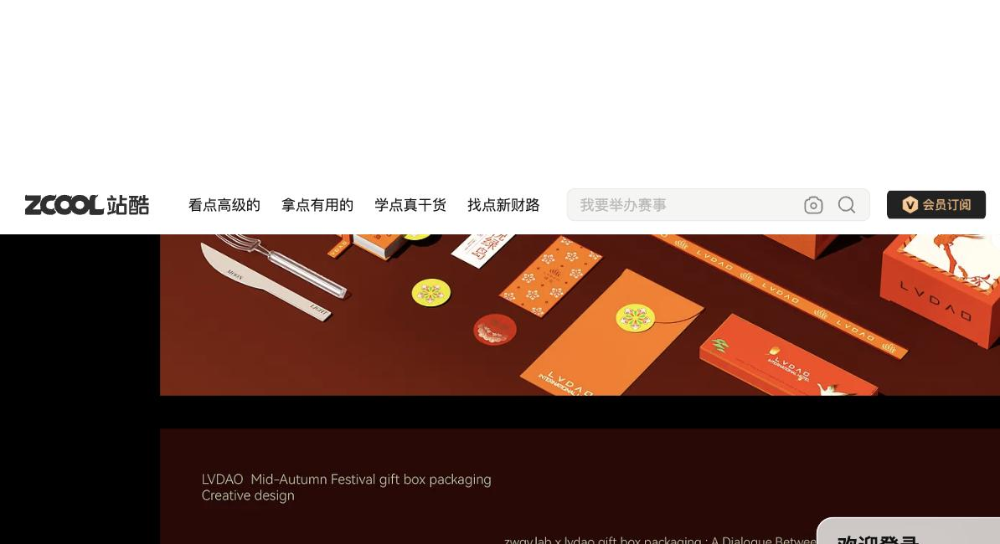
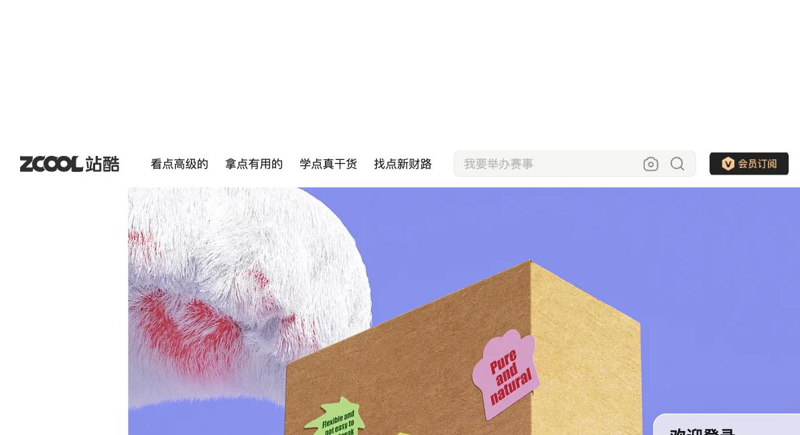

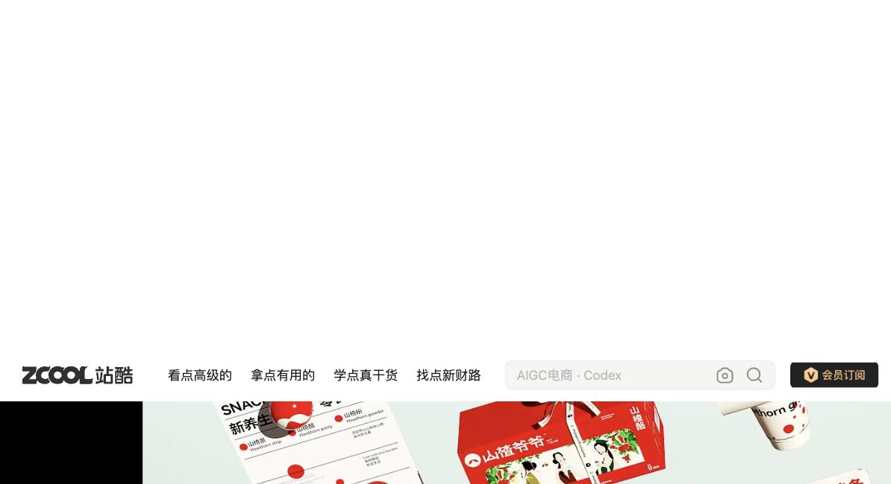

2 Extracted Personal Design System
7 Signature Rules, each requiring 3+ supporting works for HIGH confidence (2+ for MEDIUM). Full detail: PERSONAL_DESIGN_SYSTEM.md, PERSONAL_SYSTEM_VALIDATION.md.
Dominant hue + small accent HIGH · 5 works
One dominant hue family per brand, then exactly one small saturated accent — never a flat multicolor palette.
Persistent super-symbol HIGH · 4 works
One fixed, simplified graphic mark, reused verbatim across every SKU/format in a family — the studio's own "超级符号" method.
Bilingual CN/EN hierarchy HIGH · 4 works
Chinese + Latin naming pairs systematically, but which language leads in size is decided per brief, not fixed.
CGI/product-render default HIGH · 7 works
Photoreal CGI-rendered mockup is the default presentation mode; real photography is a valid but occasional exception.
Category-conditioned staging HIGH · 8 works
Dark/dramatic backdrop for heritage or premium categories; light/pastel backdrop for soft-goods, wellness, or children's categories.
SKU family / ensemble composition HIGH · 3 works
Multi-SKU or multi-piece lines are shown together as one family, unified by the recurring mark — not isolated single-item shots.
Form-as-symbol OPTIONAL · softest rule
Package/product form is sometimes shaped to echo the brand concept. Kept optional/aspirational here — 1 of its 3 supporting works (work_10) is a partially-rendered image.
3 New Brand Brief
荔泉气泡 / Lichuan Sparkling
4 New Brand Visual System
Full detail: BRAND_VISUAL_SYSTEM.md.
original super-symbol — a bubble rising into a sprout, inside a circle (the circle borrows the portfolio's recurring container convention; the shape inside is new)
Color logic — one dominant hue per SKU, one shared accent held constant across the whole line (Rule 1, extended per work_05's per-SKU-hue pattern):
Newly designed brand values — not extracted, sampled, or estimated source-portfolio colors.
Typography — Chinese "荔泉气泡" leads (largest), English "LICHUAN SPARKLING" smaller beneath it, flavor name smallest tier (work_01/03's large-native pattern, chosen over work_09's near-parity alternative). No source typeface is claimed.
| SKU | Flavor (CN / EN) | Dominant hue | Shared |
|---|---|---|---|
| 1 | 荔枝玫瑰 / Lychee Rose | Blush/coral | Sprout-Bubble mark · type hierarchy · can silhouette · spark accent |
| 2 | 黄瓜薄荷 / Cucumber Mint | Mid-green | |
| 3 | 柚子姜片 / Yuzu Ginger | Pale gold |
5 Generated Assets
All 5 rendered as flat/vector Claude Design canvas components (CSS + SVG), sharing one symbol and can component — not photoreal CGI. Full spec/prompts: ASSET_PLAN.md, generated_assets/prompts/.
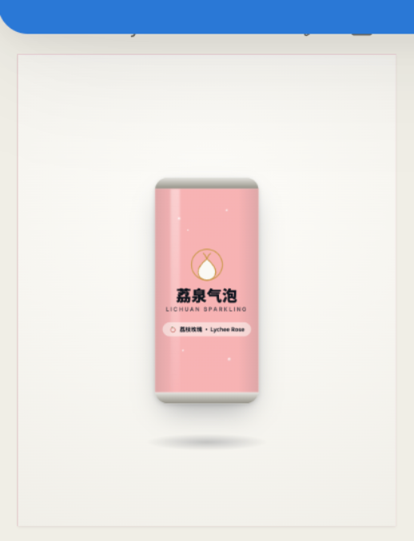
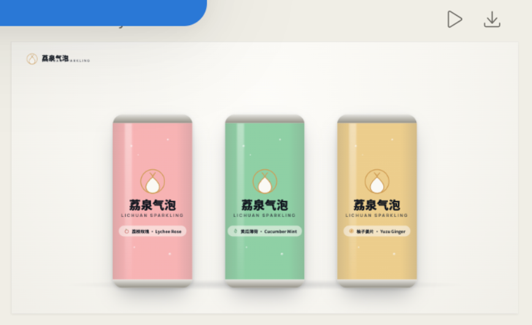
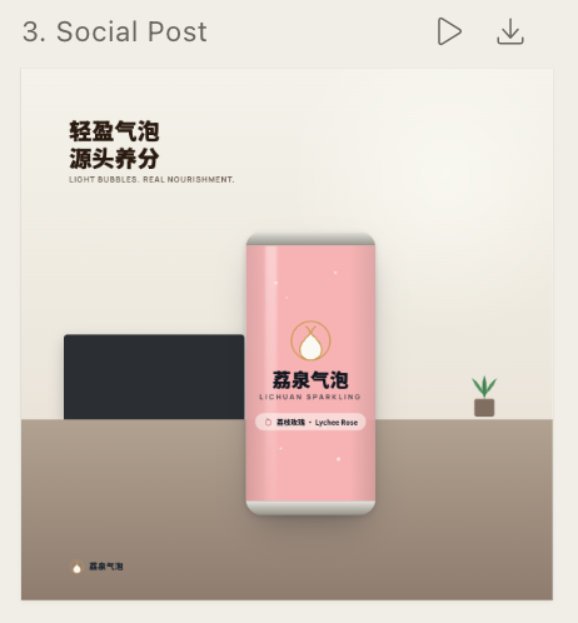
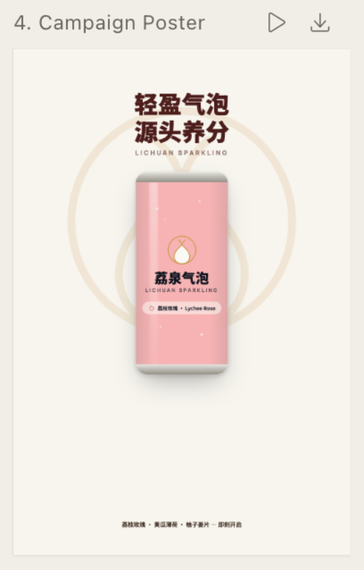
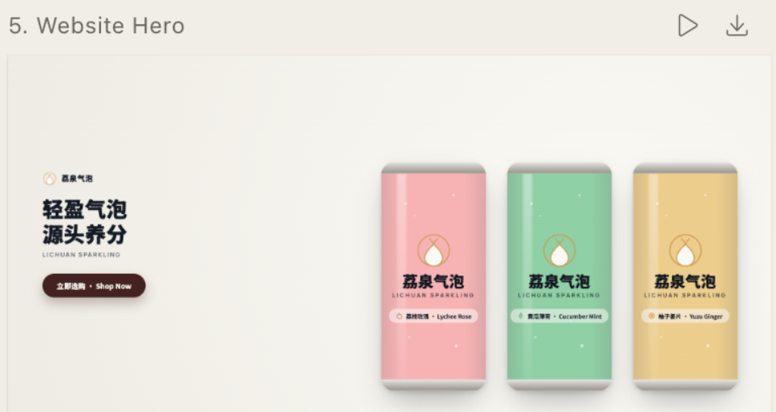
6 Traceability
Every decision traces from real portfolio evidence to a rule to a new-brand decision to a specific asset. Full chains (8 total): END_TO_END_TRACE.md.
7 Evaluation
Full scoring and rationale: EVALUATION.md, EVALUATION.csv.
| Dimension | Score | Note |
|---|---|---|
| Personal-System Specificity | 5/5 | Checkable mechanisms, not generic design advice |
| Cross-Asset Consistency | 5/5 | Structurally guaranteed via shared components |
| Traceability | 5/5 | Brief → rule → work ID → asset, documented 3 ways |
| Originality / Non-Copying | 5/5 | No sampled work is even a beverage category |
| Brand Brief Fit | 5/5 | Verified against drift toward source's other categories |
| Portfolio Grounding | 4/5 | 1 rule (form-as-symbol) rests partly on a partial image |
| Style Transfer / Generalization | 4/5 | Reasoned, not empirically blind-tested |
| Asset Completeness | 4/5 | No retail POS / e-commerce / motion asset yet |
| Automation Level | 3/5 | 1 human checkpoint; rendering fully blocked |
| Visual Fidelity | 2/5 | Flat/vector proxy, not photoreal CGI — see Section 8 |
8 Limitation & Next Step
.dc.html canvas (CSS gradients + SVG shapes standing in
for a can), not a diffusion-model or photographic render. SOCIAL_POST specifically
substitutes a flat illustration for the brief's requested real lifestyle photography. This is a
disclosed capability gap, not a claim of production readiness.
Next step: connect the already-saved, fully-specified system and per-asset
generation prompts (generated_assets/prompts/*.md) to an actual photoreal
image-generation model. Every step upstream of final rendering — portfolio evidence extraction,
rule synthesis, brand brief authoring, and asset prompt construction — is already complete and
automated; only the final rendering step needs a real model wired in. Full accounting:
LIMITATIONS_AND_NEXT_STEPS.md, FINAL_DEMO_VERDICT.md.